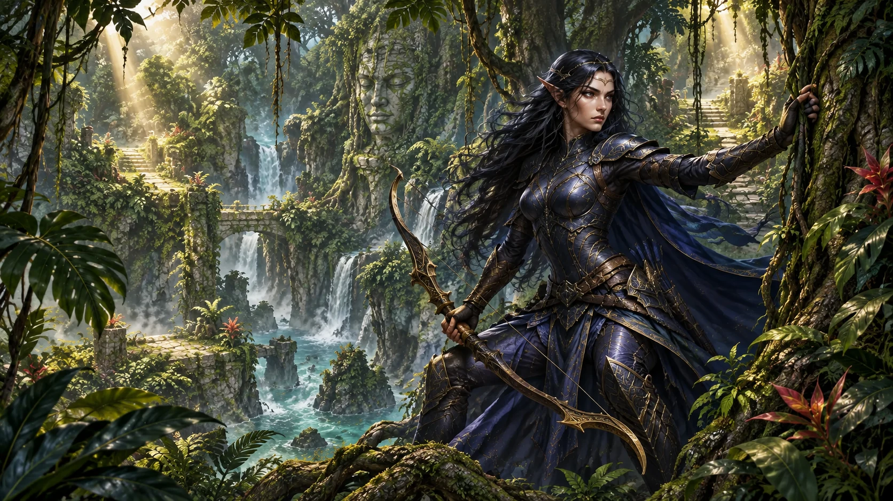

13キャラの背景と装飾セット。キャラを選ぶと、風景・枠・紋章・配色が一緒に切り替わります。
対応するフォイルを持つと、エリアの装飾とそのキャラクターの一枚絵を選べる仕組みです。横長のキャラ入り画像、画面全体の縦長背景、四隅・紋章・左右のSVG飾り、配色を組み合わせています。

この見本は、各キャラ用の素材を一つのセットとして表示しています。画像内の文字や枠は焼き込まず、ホームの表示要素として重ねています。
デザイン見本です。全13セットをゲーム本体へ組み込み済み。対応するフォイルで解放し、ホームの着せ替えから背景と装飾をセットで適用できます。